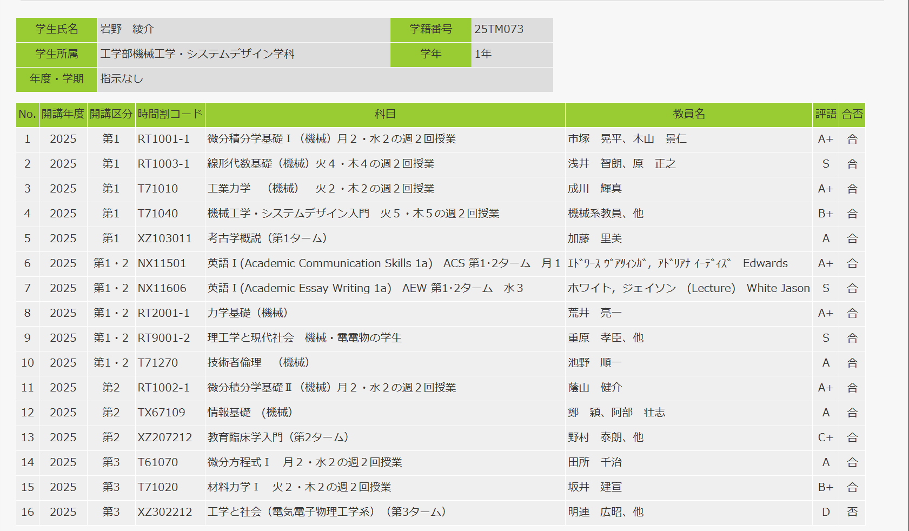
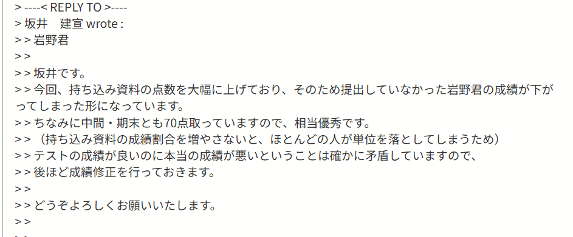
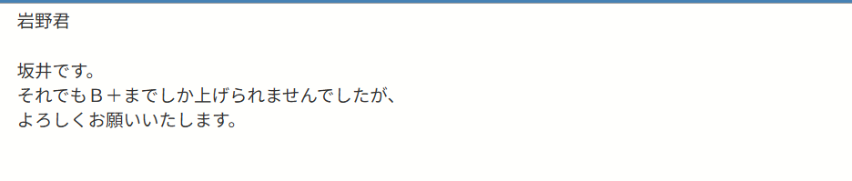

SCORE IN SCHOOL
学校の成績について紹介します．
下の画像は埼玉大学のログインページから見られる自分の成績のスクリーンショットです．
良い点
- 数学，物理系の成績がいいこと
- 英語の成績がいいこと
悪い点
- 国語，社会系の成績があまり良くないこと
- 卒業に関係しない単位を落としたこと
総評
全体的にいい成績を取っていて素晴らしい．
しかし，特定の分野では成績がかなり良い一方では，単位ギリギリ，落単している科目があり，自分自身の気分や好き嫌いの影響を受けていることがわかる.
正直，この自分の成果に波があるのは治せるとは思えないので，うまく付き合っていく．
材料力学の成績についての文句
自分の材料力学の成績は今回「B⁺」であり，特段秀でているとは言えない．
しかし，自分はこの材料力学が結構好きで，同時期の微分方程式（成績：A）よりも試験に向けて勉強していた．
それにもかかわらず，材料力学の成績が悪いのはテストの問題が解けなかったわけでも，出席やレポートをちゃんと出していなかったからというわけではない．
原因はこの講座の成績評価の仕方にあった．
この講座では本来，出席とレポート・テストの成績がそれぞれ20%，80%で評価される講座であった．
しかし，中間試験での生徒の成績があまりにも低かったため，成績評価の仕様が変更され，急遽，期末試験に1枚の紙（以降はカンニングペーパーという）の持ち込みが許可されたのだ．
このカンニングペーパーは白紙のA4用紙で，各々が好きにそこに書き込み，その一枚だけを期末試験に持ち込めるというものだ．
そして，教授からは授業中このような説明があった，「このカンニングペーパーは期末試験のあとに回収して，その内容次第では，単位取得がギリギリな生徒には加点があるよ～」
おれはこのカンニングペーパーは単位の取得が怪しい生徒のための救済措置のようなものなんだなという風に受け取った．実際，友達もそのような受け取り方をしていた．
そこで，おれはカンニングペーパーは使わずにテストに臨んだ．正直，基礎概念は抑えられていたし，公式も導出できた．
テストはしっかり解けた．正直，公式を暗記せず，その都度導いていたので他の生徒に比べてかなり時間がかかったが，試験時間120分たっぷり使って問題を解いた．
しかし，成績が出された後，埼玉大学のページに表示されていた成績はC（単位取得ギリギリ）であった．
おれはすぐに教授に直接メールを送り，この成績について問い合わせた．
すると，教授からの返信は以下のようなものだった．
「カンニングペーパーを使わなかったので，減点しました．」
かなり意訳したが，そういう内容だった．こうなった原因として，学生の低すぎる成績があげられる．
教授自体の教え方はうまかったし，質問すればしっかりと対応してくれた．しかし，中間試験の成績が低くく，このままでは受講生120名のうち4分の5が落単してしまうという状況であった．
そのため，教授は仕方なく，そのカンニングペーパーの点数の割合を大幅に上げ，大量の学生を救済するための措置を講じた．
そのため，カンニングペーパーを使用しなかった自分は大幅な減点を食らってしまったのだ．
そして，ここまでの話の中で，おれが一番イライラしたのは，この材料力学の受講生たちだ．
そもそも，しっかり授業に追い付いていればそこまでひどい点を取るようなテストではない．しかも，この講座は必修科目で，機械工学の4分野のうちの1つであり，自分たちが今後長い間付き合っていく学問である
にもかかわらず，こんな講座の成績評価方式を変えさせてしまうくらい成績がひどかったのは驚いた．
↓教授の返信
 勉強について
長々と書いたが，自分の学部の勉強（機械工学）はやってて楽しい．
高校のころに受けた東進の物理の授業はほんとに受けてよかったなと思う．物理の勉強のやり方と楽しさを学べた．
ほかにもヘッダーの「Ryosuke」をクリックするとホームに戻れるよ！
ホームに戻る